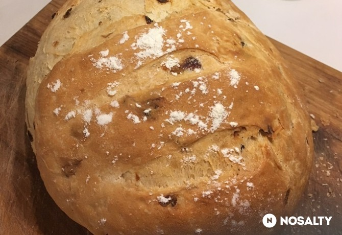

Hagymás parasztkenyér
Vissza
Forrás

Story
Kenyeret már venni nem szoktunk, mindig én sütöm a családnak. Ez a recept a férjem kedvéért született, mert imádja a sült hagymás kenyeret.
Hozzávalók
- 300 g finomliszt
- 1 tasak instant élesztő
- 1 teáskanál só
- 2 teáskanál cukor
- 210 ml víz
- 1 közepes fej vöröshagyma
- 1 ek napraforgó olaj
Elkészítés
- A hagymát apró kockákra vágjuk, olajon ledinszteljük. Közben a többi hozzávalót összegyúrjuk. Én könnyítés és időspórolás miatt ezt robotgéppel szoktam a dagasztó szárával. Nagyon fontos, hogy a víz meleg víz legyen. Hozzádolgozzuk a kihűlt hagymát is.
- Lisztezett deszkán átgyúrjuk, és annyi liszttel szórjuk meg, amennyit még felvesz. Akkor jó a tészta, ha minimálisan tapad a kezünkhöz. Visszatesszük a tálba, és duplájára kelesztjük kb. 1 óra alatt.
- Ha megkelt, újra átgyúrjuk. Még fog felvenni egy kis lisztet. Sütőpapírral bélelt gáztepsire tesszük, és megformázzuk. Ecsettel vízzel lekenjük, 1-2 helyen bevagdossuk, de nem szabad túl mélyre vágni, mert akkor nagyon szét fog nyílni sütés közben.
- A sütőt előmelegítjük, és egy konzervdobozba kb. 2 dl vizet teszünk, ezt a sütő aljába tesszük. Így lesz kívül ropogós, belül puha a kenyérkénk. Kicsit több, mint 1 óráig sütjük. Akkor jó, ha alul-felül megbarnult, és a teteje kőkemény. Hagyjuk kihűlni, közben szépen vissza fog puhulni, és "normális kenyér" állaga lesz.
| Beküldve |
2019.06.02 |
| Tegnapi nézettség |
6 |
| Össznézettség |
6050 |
| Elküldve |
2 |
| Receptkönyvben |
29 |
| Elkészítve |
1/1 |
| Facebookon megjelent |
- |